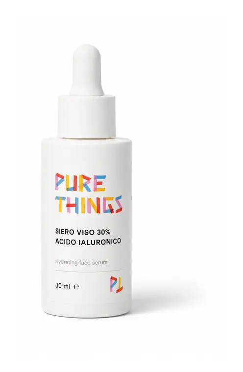
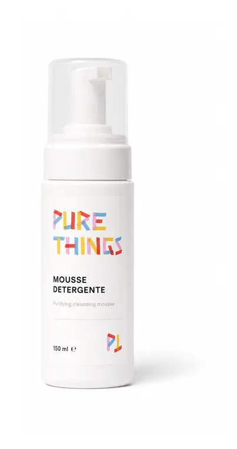
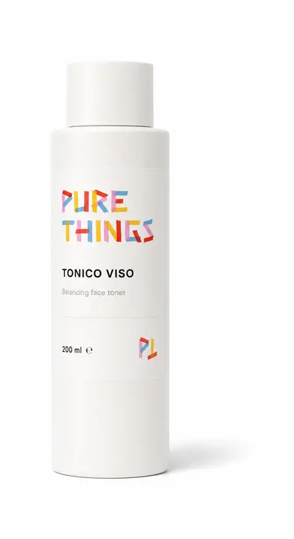
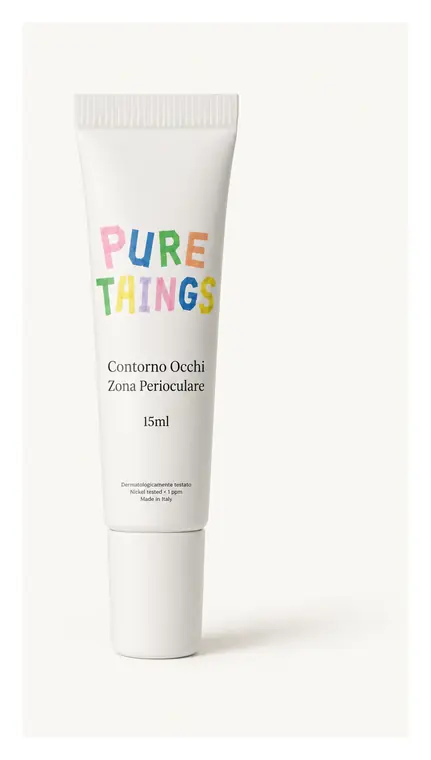
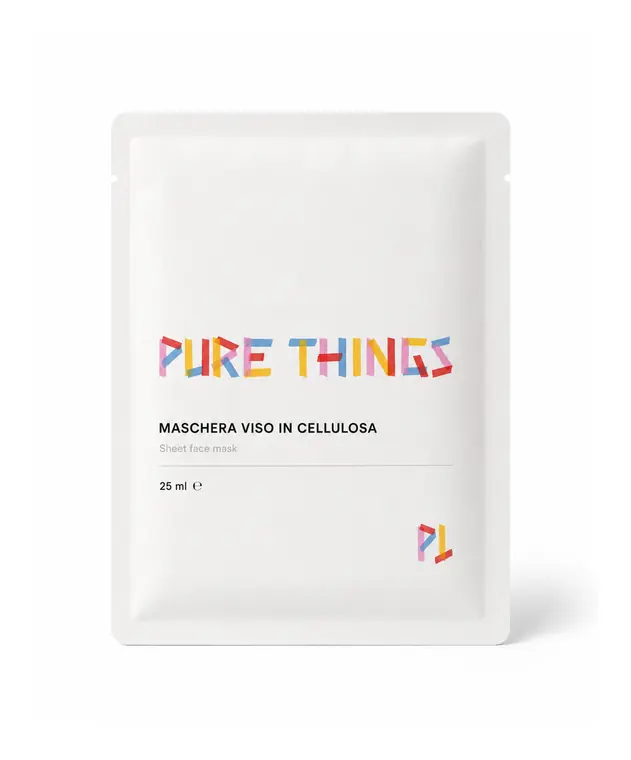
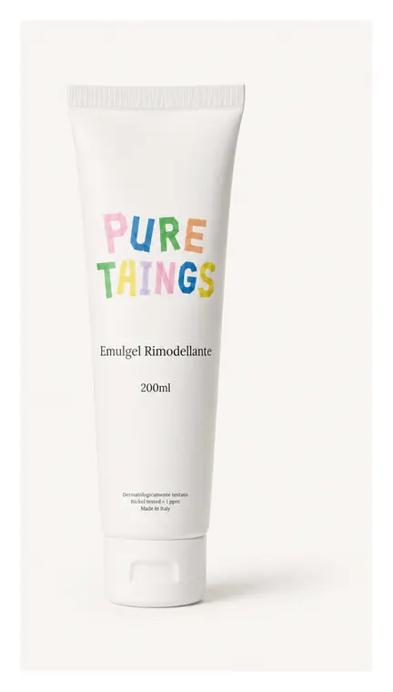
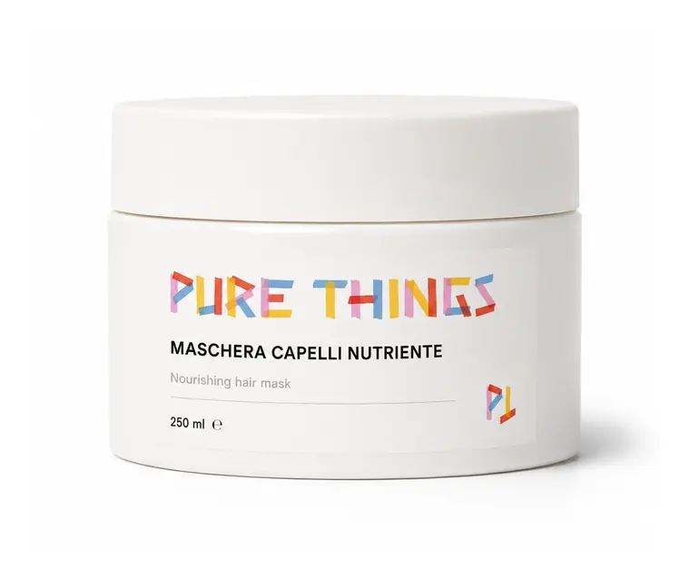
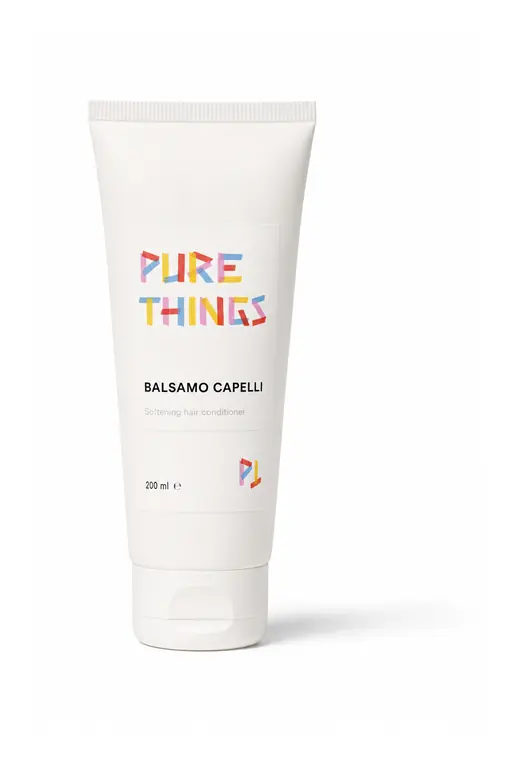
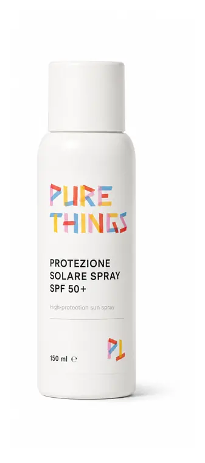

PL036 · 50ml
Purifying Face Cream
A focused face formula with real-skin energy. Crema Viso Purificante keeps the ritual clean, useful, and very Pure Things.
Real Skin Face€24

The Pure Things catalogue
A curated first collection from the catalogue: face, glow, cleansing, masks, body, hair, and sun. Product names and ingredient lists stay exact; the surrounding copy is rewritten with the Pure Things voice.
59 products shown
PL036 · 50ml
A focused face formula with real-skin energy. Crema Viso Purificante keeps the ritual clean, useful, and very Pure Things.
Real Skin Face
PL037 · 50ml
A focused face formula with real-skin energy. Crema Viso Idratante Neutra keeps the ritual clean, useful, and very Pure Things.
Real Skin FacePL038 · 50ml
A focused face formula with real-skin energy. Crema Viso Pelli Miste E Grasse keeps the ritual clean, useful, and very Pure Things.
Real Skin Face
PL039 · 50ml
A focused face formula with real-skin energy. Crema Viso Pelli Secche keeps the ritual clean, useful, and very Pure Things.
Real Skin FacePL094 · 50ml
A focused face formula with real-skin energy. Crema Viso Nutriente Notte keeps the ritual clean, useful, and very Pure Things.
Real Skin Face
PL095 · 50ml
A focused face formula with real-skin energy. Crema Viso Illuminante keeps the ritual clean, useful, and very Pure Things.
Real Skin FacePL071 · 50ml
A focused face formula with real-skin energy. Crema Viso Retinolo E Collagene keeps the ritual clean, useful, and very Pure Things.
Real Skin FacePL001 · 50ml
A focused face formula with real-skin energy. Crema Viso Azione Antiage keeps the ritual clean, useful, and very Pure Things.
Real Skin Face
PL026 · 30ml
A small bottle with serious formula energy. Siero Viso 30% Acido Ialuronico brings glow, care, and ingredient curiosity to the shelf.
Glow & RepairPL027 · 30ml
A small bottle with serious formula energy. Siero Viso 30% Bava Di Lumaca brings glow, care, and ingredient curiosity to the shelf.
Glow & RepairPL072 · 30ml
A small bottle with serious formula energy. Siero Viso Retinolo brings glow, care, and ingredient curiosity to the shelf.
Glow & RepairPL002 · 30ml
A small bottle with serious formula energy. Siero Viso Antiage brings glow, care, and ingredient curiosity to the shelf.
Glow & Repair
PL058 · 100ml
The first step without the boring-clinic mood. Mousse Detergente helps the routine feel fresh, clear, and easy to understand.
Clean StartPL005 · 150ml
The first step without the boring-clinic mood. Gel Detergente Viso helps the routine feel fresh, clear, and easy to understand.
Clean Start
PL043 · 200ml
The first step without the boring-clinic mood. Acqua Micellare Detergente helps the routine feel fresh, clear, and easy to understand.
Clean StartPL042 · 150ml
The first step without the boring-clinic mood. Tonico Viso helps the routine feel fresh, clear, and easy to understand.
Clean StartPL041 · 150ml
The first step without the boring-clinic mood. Latte Detergente helps the routine feel fresh, clear, and easy to understand.
Clean StartPL040 · 50ML
The first step without the boring-clinic mood. Scrub Viso Ai Noccioli Di Frutta helps the routine feel fresh, clear, and easy to understand.
Clean Start
PL003 · 15ml
A targeted moment for skin that wants attention. Contorno Occhi E Zona Perioculare feels like a tiny Milan treatment at home.
Masks & Little Treatments
PL078 · 12ml
A targeted moment for skin that wants attention. Maschera Viso In Cellulosa feels like a tiny Milan treatment at home.
Masks & Little TreatmentsPL079 · 5ml
A targeted moment for skin that wants attention. Patch Oro Bio-botox feels like a tiny Milan treatment at home.
Masks & Little TreatmentsPL075 · 500ml
A targeted moment for skin that wants attention. Maschera Viso Detox Con Attivi Antiage feels like a tiny Milan treatment at home.
Masks & Little TreatmentsPL084 · 500ml
A targeted moment for skin that wants attention. Maschera Illuminante Con Aloe Vera feels like a tiny Milan treatment at home.
Masks & Little TreatmentsPL006 · 200ml
Body care with graphic shelf attitude. Crema Corpo Nutriente turns the everyday shower or post-shower moment into a Pure Things ritual.
Body Things
PL096 · 200ml
Body care with graphic shelf attitude. Crema Corpo Elasticizzante turns the everyday shower or post-shower moment into a Pure Things ritual.
Body Things
PL018 · 200ml
Body care with graphic shelf attitude. Crema Corpo Rassodante turns the everyday shower or post-shower moment into a Pure Things ritual.
Body ThingsPL008 · 200ml
Body care with graphic shelf attitude. Emulgel Rimodellante turns the everyday shower or post-shower moment into a Pure Things ritual.
Body ThingsPL051 · 500ml
Body care with graphic shelf attitude. Trattamento Esfoliante Corpo turns the everyday shower or post-shower moment into a Pure Things ritual.
Body ThingsPL007 · 150ML
Body care with graphic shelf attitude. Olio Universale Copro E Capelli turns the everyday shower or post-shower moment into a Pure Things ritual.
Body Things
PL015 · 200ml
Hair care that stays simple, useful, and visually loud in the right way. Shampoo Capelli Sfibrati E Trattati belongs in the bathroom, not hidden under the sink.
Hair ThingsPL014 · 200ml
Hair care that stays simple, useful, and visually loud in the right way. Shampoo Capelli Grassi belongs in the bathroom, not hidden under the sink.
Hair ThingsPL016 · 200ml
Hair care that stays simple, useful, and visually loud in the right way. Shampoo Lavaggi Frequenti belongs in the bathroom, not hidden under the sink.
Hair ThingsPL057 · 200ml
Hair care that stays simple, useful, and visually loud in the right way. Shampoo Rinfoltimento E Ricrescita belongs in the bathroom, not hidden under the sink.
Hair ThingsPL056 · 200ml
Hair care that stays simple, useful, and visually loud in the right way. Maschera Capelli Nutriente belongs in the bathroom, not hidden under the sink.
Hair Things
PL013 · 200ml
Hair care that stays simple, useful, and visually loud in the right way. Balsamo Capelli belongs in the bathroom, not hidden under the sink.
Hair ThingsPL011 · 200ml
Hair care that stays simple, useful, and visually loud in the right way. Detergente Corpo Al Melograno belongs in the bathroom, not hidden under the sink.
Hair Things
PL033 · 100ML
Protection and after-sun care with a clean white look and colorful personality. SPF 15 Sun Protection Spray is made for sunny skin moods.
Sun ThingsPL034 · 100ML
Protection and after-sun care with a clean white look and colorful personality. SPF 30 Sun Protection Spray is made for sunny skin moods.
Sun ThingsPL035 · 100ML
Protection and after-sun care with a clean white look and colorful personality. SPF 50 Sun Protection Spray is made for sunny skin moods.
Sun ThingsRT001 · 100ml
A soft daily cleanser for skin that wants a calm, clean start without a tight feeling.
Clean StartGentle cleanserRT002 · 200ml
A gentle micellar cleanser for removing daily impurities while keeping the skin feeling comfortable.
Clean StartGentle cleanserRT003 · 50ml
A daily cream texture made for soft hydration, comfort, and a smoother skin feel.
Real Skin FaceHydrating moisturizerRT004 · 50ml
A richer cream for dry skin moods that need cushion, comfort, and lasting hydration.
Real Skin FaceHydrating moisturizerRT005 · 50ml
A lightweight moisturizer for combination and oily skin that wants hydration without heaviness.
Real Skin FaceLightweight gel moisturizerRT006 · 50ml
A fresh gel-cream texture for skin that wants glow, balance, and a lighter finish.
Real Skin FaceLightweight gel moisturizerRT007 · 30ml
A targeted clarifying treatment for breakout-prone skin and visible congestion.
Masks & Little TreatmentsAcne treatmentRT008 · 15ml
A focused spot-care product for moments when skin needs a direct anti-breakout step.
Masks & Little TreatmentsAcne treatmentRT009 · 30ml
A balancing serum for redness-prone, combination, and pore-visible skin moods.
Glow & RepairNiacinamide / redness serumRT010 · 30ml
A pore-focused serum made to support a more even, calm-looking skin finish.
Glow & RepairNiacinamide / redness serumRT011 · 30ml
A brightening serum for dullness, visible dark spots, and uneven-looking tone.
Glow & RepairVitamin C / dark spot serumRT012 · 30ml
A glow-supporting serum for skin that wants brightness without a heavy routine.
Glow & RepairVitamin C / dark spot serumRT013 · 30ml
An advanced-night serum for texture, early wrinkles, and a more renewed-looking skin surface.
Glow & RepairRetinol / peptide serumRT014 · 30ml
A peptide-led serum for skin that wants a firmer, smoother, more supported look.
Glow & RepairRetinol / peptide serumRT015 · 100ml
A light daily SPF spray for easy protection in everyday routines.
Sun ThingsSPFRT016 · 100ml
A daily SPF 30 spray for face and body protection with a clean white Pure Things look.
Sun ThingsSPFRT017 · 100ml
A higher-protection SPF spray for sunnier days and routines that need more coverage.
Sun ThingsSPFRT018 · 150ml
A fragrance-free cleanser concept for very sensitive routines and simple everyday cleansing.
Clean StartFragrance-free gentle lineRT019 · 50ml
A fragrance-free comfort cream concept for sensitive skin days and barrier-support routines.
Real Skin FaceFragrance-free gentle lineRT020 · 30ml
A simple calming serum concept for sensitive skin that avoids fragrance and wants less visual stress.
Glow & RepairFragrance-free gentle line